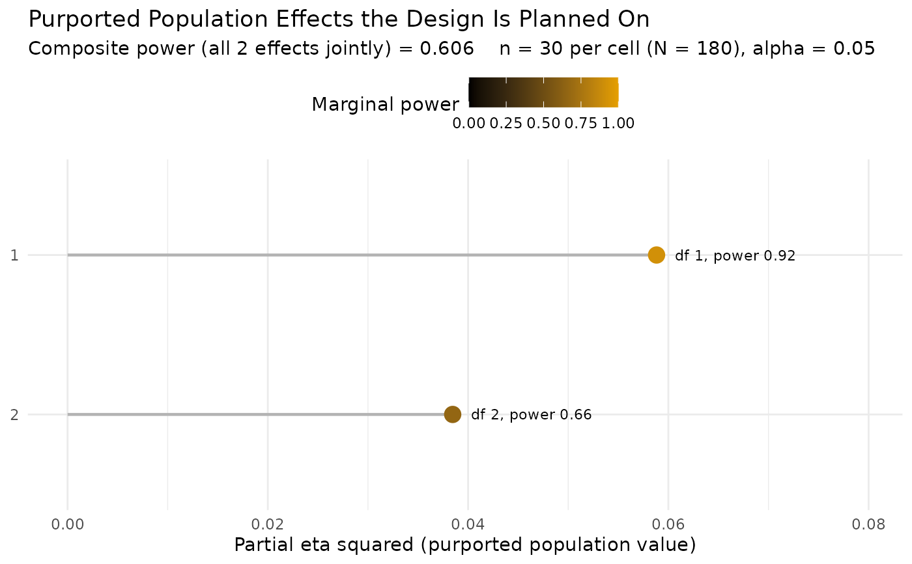

Sample Size or Composite Power for a Factorial ANCOVA
Source:R/ss_power_composite_factorial_ancova.R
ss_power_composite_factorial_ancova.RdDetermine the necessary per-cell sample size to achieve a desired level of
composite statistical power in a balanced factorial analysis of covariance,
or, given a per-cell sample size, return the realized composite power.
Composite power is the probability that every effect named in effects
is statistically significant in the same study, the quantity a design must be
planned against when its conclusion requires more than one result to hold at
once. Each effect is a main effect or an interaction of the factorial design,
tested by its own F test, and any subset of them can make up the
composite.
Usage
ss_power_composite_factorial_ancova(
factor_levels,
effects,
means = NULL,
sigma = NULL,
covariate_R2 = 0,
n_covariates = 0,
desired_power = 0.85,
alpha_level = 0.05,
n_per_cell = NULL
)
# S3 method for class 'dmar_composite_power_factorial'
plot(x, ...)Arguments
- factor_levels
Integer vector of the number of levels of each factor, one entry per factor (each at least 2). A
c(2, 3, 2)argument is a 2 by 3 by 2 design.- effects
A non-empty list naming the effects in the composite. Each element is itself a list with
factors(a vector of factor indices intofactor_levels: one index for a main effect, several for an interaction) and exactly one off(Cohen's f for that effect) orpartial_eta_squared. An optionallabelnames the effect in the output and the figure; the default label is the factor indices joined byx(for example"1x2"for the interaction of factors 1 and 2). Each element also carries the effect size, one offorpartial_eta_squared, unlessmeansis supplied, in which case the sizes come from the means and no effect size is given here. The purported effect sizes are population values the researcher posits, never sample estimates.- means
Optional array of population cell means whose dimensions are
factor_levels(a matrix for two factors), or a numeric vector of lengthprod(factor_levels)in array order (the first factor varying fastest). When supplied, each named effect's Cohen's f is computed from the means andsigma, andplot()draws the mean pattern. The means are the population values the researcher posits, on the raw scale of the outcome.- sigma
The common within-cell population standard deviation of the outcome (the square root of the error variance), required with
meansand used only there. Cohen's f for an effect is the spread of its cell-mean component relative tosigma.- covariate_R2
Proportion of the outcome's within-cell variance the covariate or covariates explain, in \([0, 1)\). The covariate removes that fraction of the error variance, which raises every effect's noncentrality through \(f / \sqrt{1 - R^2}\). Defaults to 0.
- n_covariates
Number of covariates, a non-negative integer. Each spends one residual degree of freedom. Must be positive when
covariate_R2is. Defaults to 0.- desired_power
Desired composite statistical power (default 0.85). Used only when
n_per_cellisNULL.- alpha_level
Type I error rate for each individual F test (default 0.05). This is the per-test rate, not a rate for the composite event.
- n_per_cell
Per-cell sample size, assumed balanced across cells; if supplied, the realized composite power is returned rather than a sample size planned.
- x
An object returned by
ss_power_composite_factorial_ancovaorss_power_composite_factorial_anova.- ...
Further arguments to the figure:
palette(a palette name, default"okabe_ito") andtitle.
Value
A data.frame with term and value columns: the
recommended (or supplied) n_per_cell and total N, the
composite_power, the residual_df, then for each effect its
marginal power_<label>, purported f_<label>, numerator
df_<label>, and noncentral_parm_<label>, followed by rows
echoing covariate_R2, n_covariates, cells, and
alpha_level. The result carries the dmar_ss_power class, so
tidy and glance summarize
the per-cell size and the composite power in broom convention, and a
dmar_composite_power_factorial class so plot() draws the
figure.
Details
The population effects can be stated two ways: as effect sizes, a Cohen's
f or partial eta squared per effect, or as a full array of population
cell means together with a common within-cell standard deviation, from which
each named effect's f is read off the analysis of variance
decomposition of the means. Supplying means lets the plot() method draw
the mean pattern itself, so the size of the population effects is on the page.
With no covariate (the defaults covariate_R2 = 0 and
n_covariates = 0) this is a factorial ANOVA; the wrapper
ss_power_composite_factorial_anova is that case named directly.
In a balanced factorial design the effect sums of squares are mutually orthogonal, so the effects are uncorrelated. Orthogonal effects do not give independent tests: every F test divides by the same error mean square, so an error estimate that lands low inflates all of the test statistics together. The tests are positively dependent, and composite power is strictly larger than the product of the marginal powers, bounded above by the least powerful test in the set, so the weakest effect governs the design.
Conditional on the error estimate the tests are independent, which reduces the
composite to a one dimensional integral over the chi square distribution of
that estimate. Effect \(j\) has numerator degrees of freedom
\(\prod (a - 1)\) over the factors it spans and noncentrality
\(N f_{\mathrm{adj}}^2\) with \(f_{\mathrm{adj}} = f / \sqrt{1 - R^2}\) and
\(N\) the total sample size, the same convention and covariate adjustment
ss_power_factorial_ancova uses. The residual degrees of freedom
are \(N - \mathrm{cells} - \mathrm{covariates}\). Adaptive quadrature
evaluates the integral, so nothing is simulated and the result is
deterministic to quadrature precision. A single-effect composite reproduces
the ordinary noncentral F power, and naming one effect reproduces
ss_power_factorial_anova (or ss_power_factorial_ancova
with a covariate) exactly.
Exactness. With no covariate the composite is exact to quadrature
precision: the balanced factorial F tests are exactly noncentral
F and exactly independent given the error estimate. A covariate
introduces the one approximation ss_power_factorial_ancova
already carries, treating covariate_R2 as a fixed reduction of the
error variance rather than an estimated one; the departure is of order
\(1 / N\) and is negligible at the sample sizes a multi-effect composite
usually needs.
Because every test divides by the same error estimate, composite power is not
strictly monotone in n_per_cell at the smallest residual degrees of
freedom. necessary_n_per_cell is the smallest per-cell size attaining
desired_power.
Functions
plot(dmar_composite_power_factorial): Draw the purported population effect sizes a result was planned on, each annotated with its marginal power, and the composite power in the subtitle.
The figure
The plot() method draws the purported population values. When
means were supplied it draws the mean pattern itself: a profile of the
population cell means over the first factor, one line per level of the second,
faceted by any further factors, with an error bar of plus or minus one
within-cell standard deviation at each mean so the effect sizes read against
the noise. When effect sizes were supplied instead, the cell means are not
pinned (many mean patterns share one Cohen's f), so it draws the effect
sizes: one lollipop per named effect at its partial eta squared, colored and
labeled by that effect's marginal power. Either way the composite power is in
the subtitle and nothing is simulated. Requires ggplot2.
References
Maxwell, S. E. (2004). The persistence of underpowered studies in psychological research: Causes, consequences, and remedies. Psychological Methods, 9, 147–163.
Maxwell, S. E., Delaney, H. D., & Kelley, K. (2027). Designing experiments and analyzing data: A model comparison perspective (4th ed.). Routledge. (See Chapter 7 on factorial designs, Chapter 9 on the analysis of covariance, and Chapter 3 on statistical power.)
See also
ss_power_composite_factorial_anova for the no-covariate
case; ss_power_composite_ancova_2group for the two-group ANCOVA
composite of the group effect, the covariate effect, and their interaction;
ss_power_factorial_ancova and
ss_power_factorial_anova for a single effect
Other sample size for power:
power_fisher_exact(),
ss_aipe_mixed_effects(),
ss_power_R2(),
ss_power_R2_sensitivity(),
ss_power_c(),
ss_power_c_ancova(),
ss_power_composite_ancova(),
ss_power_composite_ancova_2group(),
ss_power_composite_anova(),
ss_power_composite_factorial_ancova_het(),
ss_power_composite_factorial_anova(),
ss_power_composite_sem(),
ss_power_contrast(),
ss_power_equivalence_c(),
ss_power_factorial_ancova(),
ss_power_factorial_anova(),
ss_power_indirect_effect(),
ss_power_mixed_effects(),
ss_power_one_way_anova(),
ss_power_pcm(),
ss_power_r(),
ss_power_rc(),
ss_power_reg_coef(),
ss_power_reg_coef_sensitivity(),
ss_power_rm_anova(),
ss_power_sc(),
ss_power_sem(),
ss_power_smd(),
ss_power_split_plot_anova()
Other composite power:
ss_power_composite_ancova(),
ss_power_composite_ancova_2group(),
ss_power_composite_anova(),
ss_power_composite_factorial_ancova_het(),
ss_power_composite_factorial_anova(),
ss_power_composite_sem()
Author
Ken Kelley kkelley@nd.edu
Examples
# A 2 by 3 factorial ANCOVA. The conclusion needs both main effects to hold,
# so the design is planned against their composite. The covariate explains
# 25 percent of the within-cell variance (one covariate).
ss_power_composite_factorial_ancova(
factor_levels = c(2, 3),
effects = list(list(factors = 1, f = 0.25),
list(factors = 2, f = 0.20)),
covariate_R2 = 0.25, n_covariates = 1,
desired_power = 0.80)
#> term value
#> necessary_n_per_cell 32
#> necessary_N 192
#> composite_power 0.801
#> residual_df 185
#> power_1 0.978
#> power_2 0.818
#> f_1 0.25
#> f_2 0.2
#> df_1 1
#> df_2 2
#> noncentral_parm_1 16
#> noncentral_parm_2 10.2
#> covariate_R2 0.25
#> n_covariates 1
#> cells 6
#> alpha_level 0.05
#> desired_power 0.8
# Realized composite power at 40 per cell for a main effect and the
# interaction of a 2 by 2 design, effect sizes given as partial eta squared.
ss_power_composite_factorial_ancova(
factor_levels = c(2, 2),
effects = list(list(factors = 1, partial_eta_squared = 0.06),
list(factors = c(1, 2), partial_eta_squared = 0.04)),
n_per_cell = 40)
#> term value
#> specified_n_per_cell 40
#> specified_N 160
#> composite_power 0.647
#> residual_df 156
#> power_1 0.888
#> power_1x2 0.728
#> f_1 0.253
#> f_1x2 0.204
#> df_1 1
#> df_1x2 1
#> noncentral_parm_1 10.2
#> noncentral_parm_1x2 6.67
#> covariate_R2 0
#> n_covariates 0
#> cells 4
#> alpha_level 0.05
# Naming one effect reproduces the single-effect planner exactly.
ss_power_composite_factorial_ancova(
factor_levels = c(2, 3), effects = list(list(factors = 2, f = 0.25)),
n_per_cell = 20)
#> term value
#> specified_n_per_cell 20
#> specified_N 120
#> composite_power 0.675
#> residual_df 114
#> power_2 0.675
#> f_2 0.25
#> df_2 2
#> noncentral_parm_2 7.5
#> covariate_R2 0
#> n_covariates 0
#> cells 6
#> alpha_level 0.05
ss_power_factorial_anova(factor_levels = c(2, 3), effect_indices = 2,
f = 0.25, n_per_cell = 20)
#> term value
#> specified_n_per_cell 20
#> total_N 120
#> effect_df 2
#> error_df 114
#> noncentrality 7.5
#> actual_power 0.675
# The composite is not the product of the marginal powers. The tests share
# one error estimate, so they are positively dependent and the composite is
# the larger of the two.
plan <- ss_power_composite_factorial_ancova(
factor_levels = c(2, 2, 3),
effects = list(list(factors = 1, f = 0.30, label = "A"),
list(factors = c(1, 3), f = 0.25, label = "AxC")),
n_per_cell = 15)
plan$value[plan$term == "composite_power"]
#> [1] 0.836889
prod(plan$value[plan$term %in% c("power_A", "power_AxC")])
#> [1] 0.836717
# A one-row broom summary of the plan.
generics::tidy(ss_power_composite_factorial_ancova(
factor_levels = c(2, 3),
effects = list(list(factors = 1, f = 0.25),
list(factors = 2, f = 0.20)),
desired_power = 0.80))
#> term estimate power
#> 1 sample_size 43 0.8064647
# The figure of the purported population values, annotated with the power a
# given sample size delivers.
plot(ss_power_composite_factorial_ancova(
factor_levels = c(2, 3),
effects = list(list(factors = 1, f = 0.25),
list(factors = 2, f = 0.20)),
n_per_cell = 30))

# The effects can instead be stated as a full pattern of population cell means
# with a common within-cell SD. Rows are the 2-level factor, columns the
# 3-level factor. plot() then draws the mean pattern itself.
cell_means <- matrix(c(10, 12, 11,
13, 12, 16), nrow = 2, byrow = TRUE)
fit <- ss_power_composite_factorial_ancova(
factor_levels = c(2, 3), means = cell_means, sigma = 4,
effects = list(list(factors = 1, label = "A"),
list(factors = 2, label = "B")),
n_per_cell = 30)
fit
#> term value
#> specified_n_per_cell 30
#> specified_N 180
#> composite_power 0.712
#> residual_df 174
#> power_A 0.994
#> power_B 0.717
#> f_A 0.333
#> f_B 0.212
#> df_A 1
#> df_B 2
#> noncentral_parm_A 20
#> noncentral_parm_B 8.12
#> covariate_R2 0
#> n_covariates 0
#> cells 6
#> alpha_level 0.05
plot(fit)